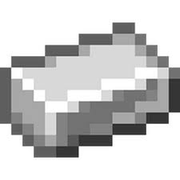

Resources Detail : Iron ingot

Name:
Iron Ingot
Type:
Resources
Rarity:
Rare
Prices:
50 Coins
Iron ingot adalah bahan dari game minecraft yang sangat berguna untuk bertahan hidup di awal game.
Buy now
Back to Marketplace